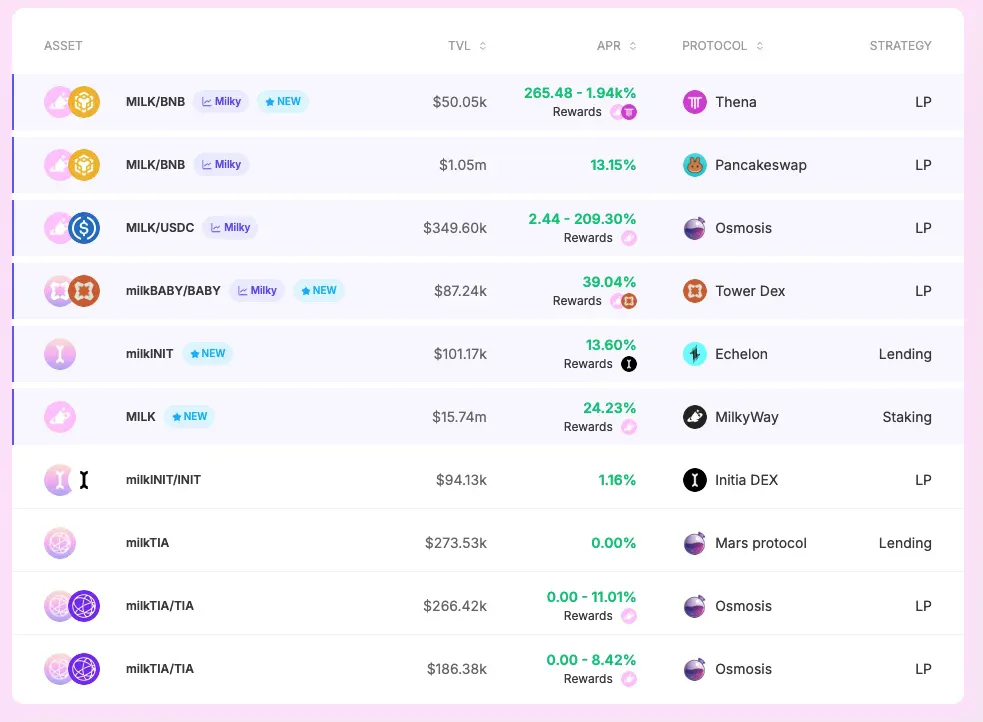
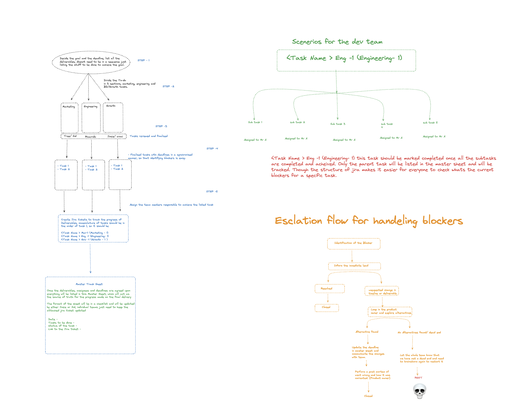

This isn't a resume.
It's a map of decisions, systems, and trade-offs.
Product & Payments
Incentives are easy to add and hard to remove.
Most systems fail because they reward the wrong behavior for too long.
Growth is rarely blocked by distribution.
It's blocked by friction nobody wants to own.
At MilkyWay, I grew the community from zero to 70K+ followers.
Payments don't forgive bad assumptions.
Users feel mistakes immediately.
Some decisions looked right on paper and failed in reality.
PayCabal is an independent comparison tool for crypto payment cards, fees, and real-world usability.
It exists because payment products are easier to sell than to understand.
A case study in increasing DeFi participation without notification spam.
Most protocols solve low participation by pushing more alerts. We built a dashboard that let users pull what they needed instead.

A case study in making cross-functional work visible without slowing anyone down.
Fifteen people. Three departments. Everyone shipping. The problem wasn't effort — it was that nobody had a shared view of what was happening across the team.

Things I've built, learned, or figured out the hard way.
I love connecting with people building cool stuff. If you want to dig into product, user onboarding, or GTM — I'm in.
Book a slot →